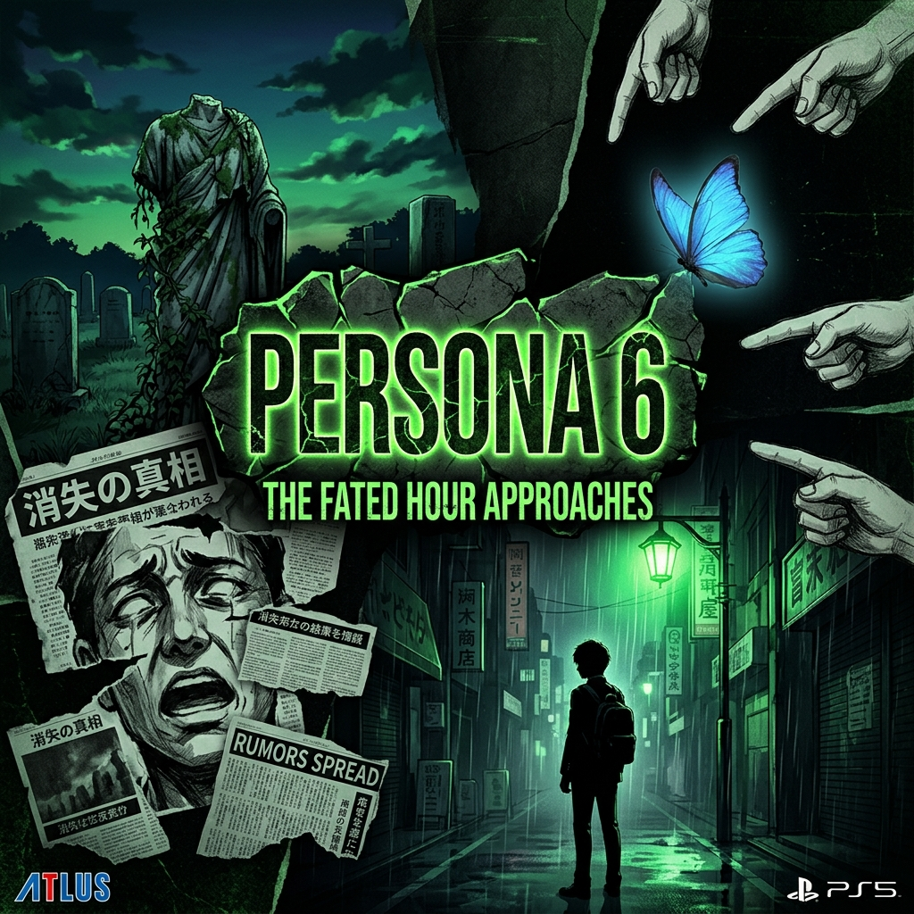

I spent 40+ hours breaking down the Persona 6 teaser frame-by-frame. Here's everything I found — the Yokohama evidence, the green color theory, "WHO ARE YOU", and the Nilfer leak explained.

TL;DR at the bottom, but if you've been waiting years for Persona 6 like I have, you'll want to read every word of this. Persona 6 was officially announced at the Xbox Games Showcase on June 7, 2026. The teaser is roughly 90 seconds long. I have watched it approximately 200 times. Here is everything.
🟢 1. The Green Color Theme — It's Not Just Branding
Every mainline Persona game since P3 has a defining color that isn't just aesthetic — it encodes the game's emotional core. Blue (P3) = death and acceptance. Yellow (P4) = truth and identity. Red (P5) = rebellion and desire. So what does neon green mean for P6?
In Japanese folklore and horror, green carries connotations of envy, pestilence, supernatural corruption, and the uncanny. Yokai associated with the color green are often shapeshifters or entities that blur the line between the living and the dead. The choice of a sickly, "toxic" neon green — not a fresh, hopeful green — is absolutely deliberate. This game is going to be about something wrong beneath the surface of ordinary life. Urban legends, rumors, occult phenomena spreading through a community like a virus.
The trailer's text even tells us directly: "strange rumors, unsettling urban legends, and occult incidents." The green is the rot spreading through the city.
🏙️ 2. The Yokohama Setting — Here's the Evidence
Before the official reveal, credible leakers were pointing to Yokohama. Post-announcement, community members have done extraordinary detective work comparing leaked background art to real-world locations:
- Sakuragicho Station: The building geometry, column spacing, and roofline in leaked concept art matches the west exit of Sakuragicho Station almost exactly when overlaid. Multiple community members have independently confirmed this.
- Minato Mirai skyline: A distant cityscape glimpsed in the trailer's final seconds has the distinctive high-rise cluster of Minato Mirai 21, including what appears to be the Landmark Tower silhouette.
- The Ōsanbashi Pier shot: One frame in the trailer shows what appears to be a waterfront area with a distinctive curved roof — matching Ōsanbashi Yokohama International Passenger Terminal, which is famous for its wave-like design.
Yokohama is also thematically perfect. It's Japan's second-largest city, historically a major port city with deep Western influence, and it has a long cultural association with mystery, foreigners, and the mixing of traditional Japan with external forces. The "urban legends spreading through a community" premise maps beautifully onto Yokohama's real-world cultural identity.
❓ 3. "WHO ARE YOU" — What It Actually Means
The cryptic text "WHO ARE YOU" that flashes across the screen near the end of the teaser is the most discussed single element in the announcement. Two theories have emerged:
Theory A (most popular): It's a direct address to the player — breaking the fourth wall in the tradition of Persona's philosophical roots in Jungian psychology. The "persona" is the mask we wear, the face we show to the world. "WHO ARE YOU" is asking: beneath your mask, who is the real you? This is the core question of the entire series, now posed more explicitly and more confrontationally than ever before.
Theory B (darker interpretation): It's not a question directed at you — it's a question you're being asked because something doesn't recognize you anymore. An urban legend spreading through the city is causing people to lose their sense of self, their identity. The protagonist is caught in this web. The question is being asked of the protagonist by something that perceives them as a threat or an anomaly.
I personally believe Theory B is closer. The framing — the face made of newspaper clippings, the pointing fingers — suggests collective social accusation, not philosophical introspection. Someone or something is pointing at our protagonist and saying: you are not one of us. Who are you?
🐸 4. The "Nilfer" Mascot Leak — Credibility Assessment
In the weeks before the announcement, a credible leaker shared development asset files that included reference to a mascot character named "Nilfer" (also transcribed as Nilüfer, a Turkish name meaning "water lily"). This same leaker correctly predicted: the Xbox showcase reveal, the green color theme, the Yokohama setting, and the school-plus-occult-investigation premise. Batting 4/4 on verifiable predictions.
The "Nilüfer" name has sparked intense speculation. Community consensus is currently pointing toward an aquatic or plant-based creature — possibly a kappa (a Japanese water demon known for lurking in rivers) or something more novel. The water lily connection and the green theme align. Several artists in this community have already produced concept art that's frankly incredible — search "Nilfer fan design" in this sub.
Atlus has not officially confirmed any character designs, so treat this as highly plausible but still speculative.
🎭 5. The Protagonist — Blonde Bowl Cut and the "John Persona" Era
Leaked concept art shows a male protagonist with a distinctive short blonde bowl cut. The community has affectionately (and somewhat chaotically) dubbed him "John Persona." The blonde hair is notable — it's unusual for a Japanese high school setting and may hint at mixed heritage, a transfer student from abroad, or simply Atlus choosing a more globally appealing design.
A female character with short black hair and red highlights also appears in leaked sheets. Initial speculation that she was a co-protagonist has been walked back by reliable sources — she appears to be a key party member rather than a dual lead.
📅 6. Release Date Speculation
Atlus has given no official window. However, the clues are there. Persona 4 Revival is confirmed for February 18, 2027. Atlus has historically avoided cannibalizing their own releases. If P4 Revival occupies 2027, Persona 6's realistic launch windows are either late 2027 (optimistic) or 2028 (most likely based on development timelines). Persona 5 spent approximately 5 years in development from P4. If P6 started serious development around 2022-2023 following P5 Royal's console ports, 2027-2028 fits perfectly.
TL;DR: The neon green = supernatural corruption/envy in Japanese folklore, perfectly matching the urban legends premise. Yokohama is the setting (multiple location matches confirmed by community). "WHO ARE YOU" is likely a social accusation about identity loss, not just a philosophical question. "Nilfer" mascot leak is highly credible (4/4 correct predictions). Protagonist is blonde, nicknamed "John Persona." Release window: 2027 at the earliest, 2028 most likely. This is going to be the darkest, most horror-adjacent Persona since the PS1 era and I am not okay about how excited I am.
Edit: Thank you so much for the awards and kind comments. To the people asking — yes, I will be updating this thread as more info drops. Bookmarking this post is your best option for a living breakdown document.
Edit 2: Yes, I am aware the "WHO ARE YOU" text also appears in the Xbox Store page description. This adds further credence to Theory B as official marketing copy rather than a one-off teaser element.
Add a Comment
The Sakuragicho Station background art match is not a coincidence. I overlaid the leaked concept art with a Google Street View screenshot at the same angle and the building geometry, column spacing, and roofline are essentially identical. I've posted the comparison in the pinned megathread image gallery.
Yokohama is confirmed in my heart and, at this point, almost certainly in the game. The thematic fit is also extraordinary — Yokohama has the Kannai district (historically associated with the foreign settlement), the docklands, the Chinatown. It's a city built on the collision of worlds. Perfect for a Persona game about urban legends and hidden truths.
To add to this: Yokohama also has the famous Motomachi shopping street and the Yamashita Park waterfront. Both are iconic, visually distinct locations that Atlus could render absolutely beautifully. The contrast between the pleasant, tourist-friendly surface of Yokohama and a dark supernatural undercurrent is exactly the kind of duality Persona thrives on.
Also: the green coloring applied to Yokohama's real-world skyline in my head is making me feel physically ill in the best way. The juxtaposition with P5's red-and-black Paris/Tokyo neon is going to be striking.
Exactly — and that's what makes the green choice so specifically insidious. It's not a "nature" green or a "hope" green. It's the green of something organic and alive that has gone wrong. Algae choking a canal. Mold spreading through a wall. A rumor going viral through a community and rotting it from the inside. Atlus absolutely knew what they were doing.
I live in Yokohama. I walked past Sakuragicho Station this morning with the leaked image on my phone. It's the station. 100%. The specific angle of the support columns and the glass panel configuration on the west exit are unmistakable. I almost dropped my coffee.
Also for context: the area around Sakuragicho is genuinely eerie at night. The older canal district adjacent to it has a completely different atmosphere from the modern Minato Mirai towers 500 meters away. It feels like two different eras of the city existing simultaneously. Perfect Persona energy.
Atlus issuing DMCA takedowns for the leaked images last year — actively removing them from Twitter, Reddit, Discord — and then revealing a game at the Xbox Showcase that matches those exact images frame-for-frame is the most Atlus thing I have ever witnessed in my decade of following this company.
They didn't just fail to suppress the leaks. They created a global treasure hunt that made every fan intimately familiar with the leaked material, so that when the teaser dropped, the community erupted within seconds with "THE LEAKS WERE REAL." The hype engineering, intentional or not, was immaculate. I will not hear otherwise.
The Schrodinger's leak situation: Atlus simultaneously DMCA'd the images while their own QA team was probably playing the build those exact images came from. Somewhere at Atlus HQ someone watched the Xbox showcase moment and had incredibly complicated feelings about it.
This is also why I give so much credibility to the "Nilfer" leaker specifically — they were using the same pipeline as the DMCA'd images, and every single detail they leaked that was verifiable at the showcase came true. At some point you have to credit the source.
I love this sub but I do want to gently push back on some of the certainty here. The "Sakuragicho Station match" is based on leaked images that Atlus DMCA'd — meaning we can't rule out that the leaked art is old, placeholder, or from a build that changed significantly. Game concept art often changes dramatically between early production and release.
Persona 5 early concept art placed the game in a completely different school environment from what shipped. I'm not saying Yokohama is wrong — I think it's probably right — but "I overlaid a screenshot and the columns match" is not quite the same as confirmation. Let's stay excited but calibrated.
This is completely fair and I should have been clearer about the confidence levels in my post. Yokohama is "highly likely based on convergent evidence" — the location match, the thematic fit, the Minato Mirai skyline, the leaker's other predictions being correct. Not "confirmed." I've added a note to the original section. Good catch.
As someone who played Persona 1 and 2 when they were new: the vibe shift in this teaser is real and it's exciting. The original games were genuinely disturbing — apocalyptic, mythological, with a horror undertone the later games softened considerably. Persona 3 introduced the social sim structure and subsequent games leaned into it more and more until P5 was essentially a heist thriller with Persona mechanics.
The occult urban legend premise, the "oppressive" atmosphere, the newspaper clippings (a direct callback to P2's rumor mechanics) — this reads like Atlus deliberately threading the needle between their modern audience and the franchise's roots. If they pull it off, this could be the definitive Persona game. Bold statement, I stand by it.
The newspaper clippings forming a face is such a direct P2: Innocent Sin reference I actually said "oh my god" out loud. In P2, the entire game's premise was that rumors spread through the city became real. Saying something was true made it true. That mechanic was terrifying and underexplored. If P6 is revisiting it with modern production values and a proper Atlus budget, I may actually pass out.
The "Nilüfer = water lily = kappa" pipeline is actually more solid than people are giving it credit for. Nilüfer is a Turkish name, yes, but it's also a common loanword in Persian and Arabic contexts. The Persona series has used names from multiple mythological traditions for its mascots — Morgana (Arthurian/Welsh), Teddie (designed to subvert expectations), Koromaru (Japanese). A Turkish-origin name for a Japanese-set game's mascot would be very on-brand for Atlus's playful internationalism.
Kappa are water creatures traditionally associated with rivers and ponds — they're associated with cucumbers, sumo wrestling, and drowning people. In a Yokohama port city setting, an aquatic mascot connected to the city's waterways would be absolutely perfect. The Ōoka River runs directly through central Yokohama. I'm calling Kappa-adjacent mascot with a lily-pad or canal aesthetic. Screenshot this comment.
If the mascot is a kappa and his name is Nilfer and he wears a lily pad on his head and speaks entirely in folklore proverbs I am going to simply die on the spot and ascend to a higher plane. Atlus please make this happen. I'm begging.
Screenshot taken. If this is correct I am absolutely making a commemorative post. The lily pad hat detail would be elite. Kappa are also known in folklore for their incredible politeness — they will always bow back if you bow to them, which empties the water dish on their head and defeats them. That's such a Persona mechanic (social link moment!) I'm spiraling.